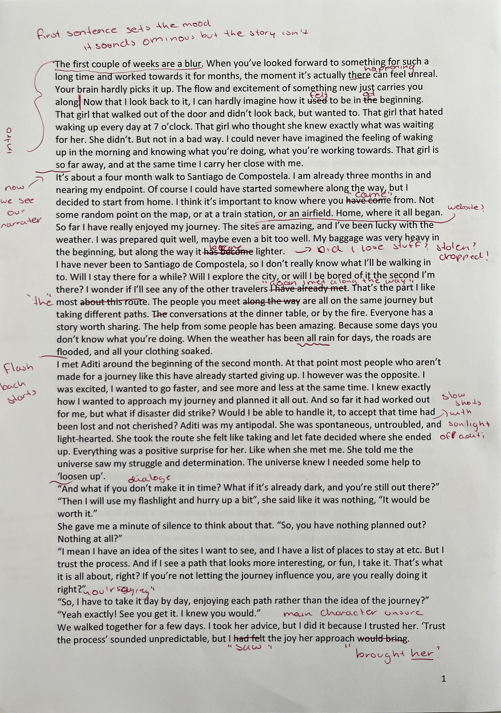
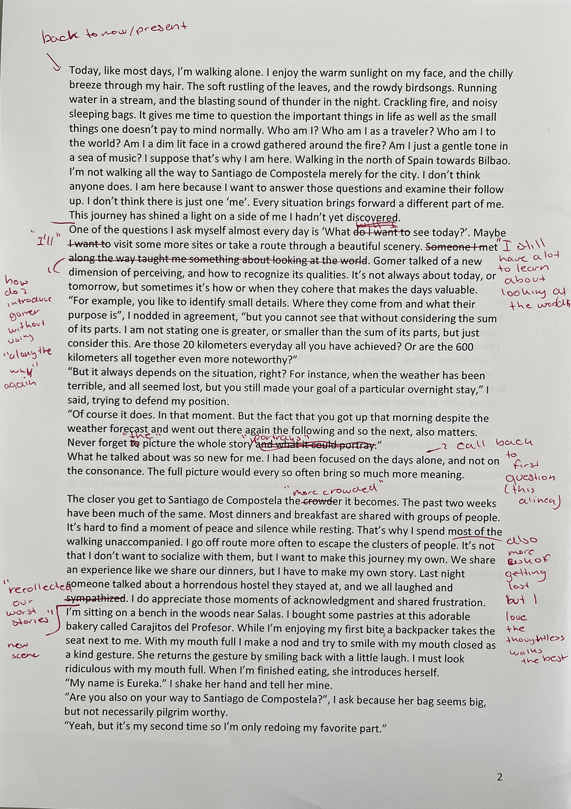

Portfolio Leeds Institute of Art
Welcome to my portfolio website and the page I created for my admission at leeds. I designed and programmed this website from scratch: I did not use an external programme like Wordpress. I did this because I took a course to learn coding alongside my studies last year and I really enjoy it. My portfolio consists of seven video works and three other subjects. You can view the video works on the video page by clicking on the image to the right or using the menu. I have presented the other three works below in a more sketchbook style. In this selection of works I try to paint a picture of how I look around me and what kind of visuals I find intriguing. Most of my video work and photography is explorative. I try playing with different kinds of storytelling and accompanying sounds.
Photography
A glimpse of the different kinds of photography and photographic artwork I make. More can be found on the work page.
Reminiscence
It started with an assignment to create your own utopia. This could include or take shape as anything you wished. I soon realized that my image of a utopia could be someone else's dystopia. I created an installation to take you to this otherworld and give you a new 'frame'.
Travel story
Two years ago we were given the assignment to write a travelogue/story. This short story would represent the artistic and academic journey you have made so far. I revisited this story and made notes about the vision I had for this story.
Sometimes I photgraph while taking walk. Other times I investigate a detail and make small things seem big or from another world.


How do you make a serie from photos?
On its own none of these pictures spoke to me the way they do toghether
Click for fullscreen

I think my photography says a lot about the way I look around me.
Sometimes even when I don't have my lenses with me I imagine how things would look through my camera.
For my sister's 21st birthday we hosted a dinner for her and her friends. I was the photographer for this occasion. It was my first time doing this kind of live event photography. It pushed me to find different angles and compositions without do-overs.
What is a utopia?
or is it dystopian?
I have a fascination for abandoned and old places. Spaces humans used to inhibit but now are only remembered by the ruins left behind. Nature starts taking back these spaces.
Bosco Verticale, Milan, Italy
Not actually abandoned but the amount of plants do give of the same effect.
Abandoned cave houses, Matera, Italy

I used a toy car to recreate dystopian scenes
and played with the concept of enlarging and narrowing perspective

Had to 3d print a railroad because I didn't have a mini version myself
To experience the installation, you have to step inside a black frame on the ground, put on headphones and look through the tube. The viewer will hear a audio clip I made from environmental sounds and look at the four dystopian photgraphs.
The journey to santigo de compostela is a metaphor for my development during the first six months of my first year at my current course.
The characters I encounter represent the steps of idea development I could still learn from or discovered at the time
Because it was a assignment with a maximum amount of words, I put a lot of 'story' into a short amount of (reading)time


Thank you for taking the time to look at my portfolio